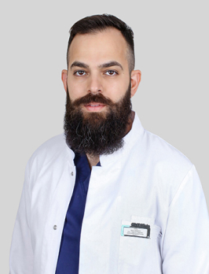

Бесплатная консультация лучших врачей-флебологов москвы
узи вен включено в прием
Предложение действительно до 31.07.2023 года
Почему консультация врача-флеболога нужна всем
6 мифов о варикознозной болезни

Миф 6
При наследственной предрасположенности к варикозной болезни она рано или поздно проявится. Если соблюдать меры профилактики, то это произойдет в более позднем возрасте.
Преимущества
Преимущества консультации и лечения в GMTClinic
-
Высококлассные
специалистыПрием ведут опытные сердечно-сосудистые и рентгенэндоваскулярные хирурги. -
Обеспечение
качества и безопасностиВрачи – флебологи проводят более 700 сосудистых операций в год. -
Передовое
оборудованиеСовременный аппарат УЗИ-диагностики для ультразвуковой допплерографии вен в реальном времени. -
Проверенные
методикиИспользование малотравматичных методик терапии варикозной болезни. -
Гарантированный
результатЛечение флебологических проблем любой сложности, сопровождающихся трофическими нарушениями, флебитами и тромбофлебитами.
Методы лечения
Методы лечения варикозной болезни в GMTClinic
Врачи-флебологи клиники используют самые современные малоинвазивные методики. Они позволяют безболезненно и без длительного восстановления избавиться от заболевания.

Результаты процедуры
Результаты процедуры
Специалисты
Врачи-флебологи GMTClinic
-
Салех Амро Захарович к.м.н., сердечно-сосудистый и рентгенэндоваскулярный хирург, флеболог Записаться на прием
-

Как проходит консультация флеболога
Как проходит консультация флеболога
1
Сбор анамнеза
2
Визуальный осмотр, оценка выраженности нарушений
3
Инструментальная диагностика, проводится ультразвуковая допплерография
Результаты консультации
Что вы получите после консультации
-
1
Протокол ультразвукового сканирования вен.
Это основополагающий документ в дальнейшей терапии. -
2
Заключение врача.
Оно содержит точный диагноз в соответствии с международной классификацией, а также подробный план лечения обнаруженной проблемы. -
3
Методики коррекции венозной патологии при ее обнаружении.
Это может быть консервативное лечение, склеротерапия, малоинвазивная или классическая хирургия. -
4
Рекомендации по профилактике варикозной болезни, если патология не выявлена.